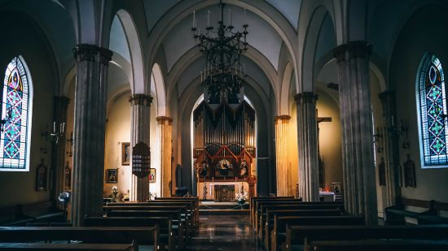
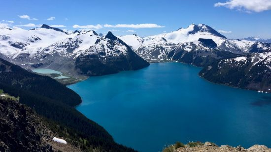
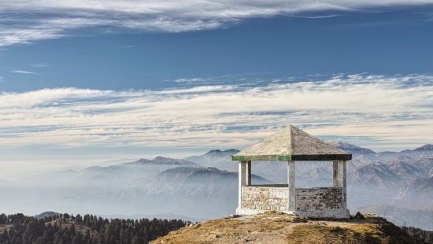

Explore Dalhousie
St Patrick Church
With plunging green trees and pine valleys surrounding it, St. Patrick's Church is another amazing place in the bygone times. The old world charm of the place would infect the tourist on their trip to St. Patrick's Church which is located in the flourishing landscapes of Dalhousie.
Chamera lake
Chamera lake is located in the Chamba district at a height of 763 M from the sea level. it is the captivating traveller’s destination. It is based approximately at a distance of 30 KM from Dalhousie. This lake was formed because of the Chamera Dam was built on the Ravi River. It is a great place for all adrenaline junkies as it proffers a plethora of water sports.
Khajjiar Lake
For someone who is a nature lover, it is quite impossible to ignore the natural magnificence of Himachal Pradesh. Located in Khajjiar, in Chamba district of Himachal Pradesh, this lake is situated at a height of around 1,920 m above sea level between Dalhousie and Chamba Town. The lake is set in a huge grassy landscape, with evergreen cedar trees surrounding it from all sides..
Dainkund Hill
Dainkund is the highest peak in Dalhousie and gets maximum snowfall during the winter season. There is a motorable road that leads to this hill, but one can also choose to trek this distance as the views are really astonishing here. This whole stretch is full of natural beauty that gives a completely different experience.
